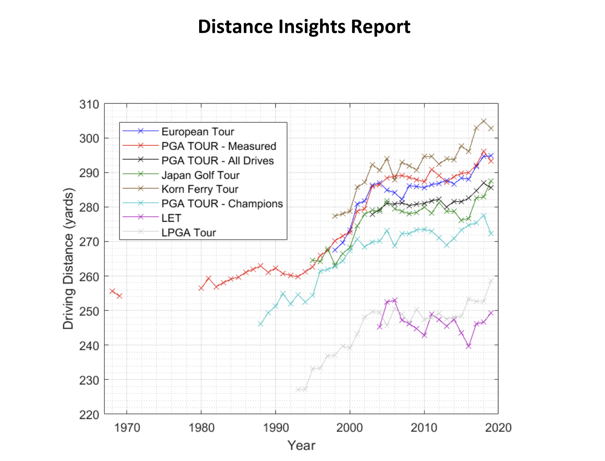
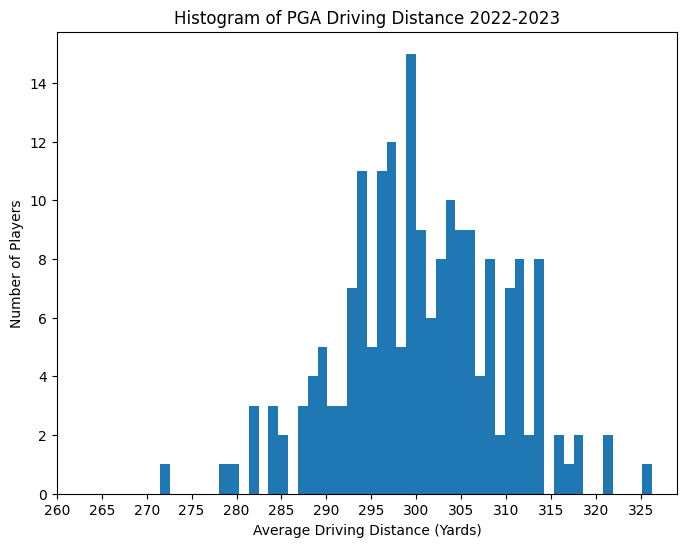
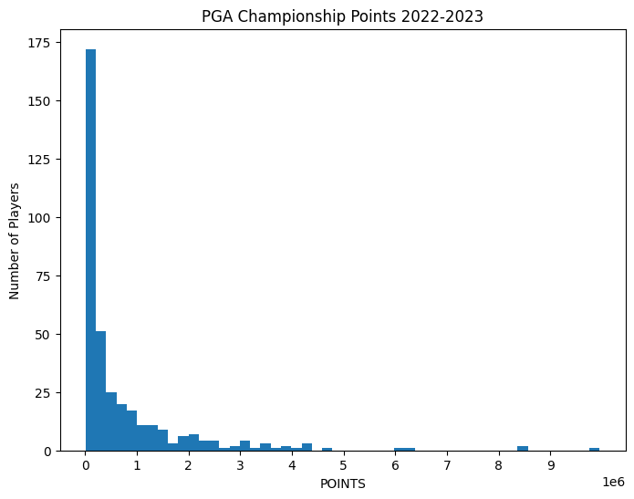
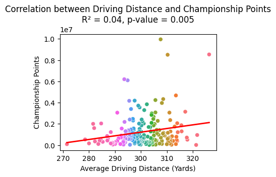
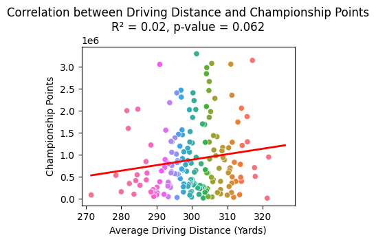
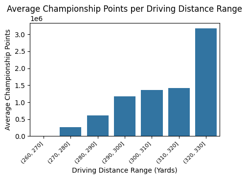

Tee it High, Let it Fly: Exploring the Impact of Distance in Modern Golf
Kristofer Tsai, BSA Journalism
Introduction
In the world of professional golf, there is a common belief that distance off the tee can be a significant advantage, giving players a closer approach to the hole and thus a better chance of scoring. As Tiger Woods famously remarked, "The most important club in the bag is the driver, as you can cheat holes, cut corners, and take things out of play with it." Yet, the reality may be more nuanced. While many tour champions often top the driving distance statistics, longer shots also come with increased risk; the more time the ball spends in the air, the higher the likelihood of encountering hazards or veering off the fairway. This analysis will examine the relationship between driving distance and winning potential, utilising the PGA Tour's 2022–2023 season data to explore whether longer drives consistently correlate with success on the leaderboard.
Evolution of Driving Distance
Distance Insight Report

Over the years, driving distance in professional golf has seen a significant increase, driven by advancements in equipment technology, improved player fitness, and optimised swing techniques. Below is a graph sourced from the Distance Insights Report, a collaborative effort between the USGA (United States Golf Association) and The R&A. Published in 2020, the report examines the historical trends and factors contributing to increases in driving distances across professional golf tours. It is evident from this graph that driving distances of professionals across all tours have steadily increased over the years, reflecting the ongoing influence of modern technology, athleticism, and refined techniques in the sport.
Case Study: Bay Hill Country Club & Lodge, Hole 6 Par 5
Longer drives provide players with a significant advantage, allowing them to approach greens with shorter and more precise clubs, ultimately improving scoring opportunities. This is particularly evident on challenging holes such as the par-5 6th hole at Bay Hill Club Lodge, where driving distance can drastically alter the strategy.
Players like Bryson DeChambeau, known for his exceptional power, demonstrated how cutting across the water hazard with a long drive could leave him just a short approach to the green, effectively turning a traditionally three-shot hole into a potential eagle opportunity. By contrast, the majority of the field took the safer route around the water, adding distance to their second shots and relying on precision to stay in play. This example underscores the importance of driving distance, not just in maximising scoring opportunities but also in creating new strategies that redefine how courses are played in modern golf. However, driving distance does not guarantee dominance on the leaderboard. Compare prominent players like Rory Mcilroy, Brandon Matthews and the Tour Median.
| Average Driving Distance | Championship Points | |
| Rory Mcilroy | 326.30 | 8536500.0 |
| Brandon Matthews | 321.30 | 15762.0 |
| Tour Median | 300.05 | 711949.5 |
*Dataset is calculated from PGA official stats, 2022-2023 season
Evidently, while Rory McIlroy’s impressive average driving distance of 326.30 yards correlates with his dominance on the leaderboard and championship points tally of 8,536,500, this trend does not hold universally. Brandon Matthews, despite having a similar driving distance of 321.30 yards, has significantly fewer championship points at only 15,762. In contrast, the Tour Median driving distance of 300.05 yards corresponds to a middle-ground performance, with a more substantial 711,949.5 championship points. This comparison highlights that while driving distance is an important factor, other elements such as consistency, short game, and putting play equally critical roles in determining overall success on the leaderboard.
Definitions
United States Golf Association (USGA): The organisation that governs golf in the United States and Mexico. USGA creates the rules, runs major tournaments like the U.S. Open, and works to grow and protect the game.
Royal and Ancient Golf Club of St Andrew (R&A): The organisation that oversees golf everywhere except the United States and Mexico. R&A works alongside the USGA to administer the Rules of Golf, set equipment standards, and organise major championships
Driving Distance: Total distance measured from the teeing ground to the point where the ball comes to rest—regardless of the location (fairway, rough, bunker, putting green, etc.)." (USGA)
Championship Points: Total points awarded to players based on their performance in tournaments. These points accumulate over the season and determine players’ rankings in the FedExCup standings. Points are distributed differently depending on the event's prestige, with regular events typically awarding 500 points to the winner, and higher-profile events (like major championships or the Players Championship) offering up to 750 points.
Linear Regression: Linear regression is a statistical method that models the relationship between a dependent variable and one or more independent variables by fitting a linear equation to observed data. The equation has the form: Y = bX + A, where Y is the predicted score, b is the slope of the line, and A is the Y-intercept. (Libretext Stats)
R-Squared: R-squared is a statistical measure that indicates the proportion of the variance in the dependent variable that is predictable from the independent variable(s). It ranges from 0 to 1, with higher values indicating a better fit of the model to the data. (Libretext Stats)
P-Value: IThe probability of obtaining test results at least as extreme as the observed results, assuming that the null hypothesis is true. It helps determine the statistical significance of the results. A common threshold for significance is a p-value less than 0.05. (Libretext Stats)
Bin Analysis: Bin Analysis refers to the process of dividing continuous data into discrete intervals, called "bins," to facilitate the analysis of data distribution, frequency, and trends within specific ranges. Each bin represents a segment of the data range, and the process allows for easier interpretation and comparison of data patterns.
Sourcing the Dataset
When sourcing a reliable dataset for elite-level golf performance, three primary leagues come to mind: the PGA Tour, LIV Tour, and DP World Tour.
Why the PGA Tour?
The PGA Tour provides the most complete and clean datasets for our analysis. We exclude the LIV Tour due to concerns about its reliability. Many golfers who transitioned to LIV did so enticed by substantial financial rewards—sometimes even nine-figure sums in US dollars. With such staggering payouts already secured, there's a potential for reduced motivation among LIV golfers, who may not feel the same drive to consistently perform at the highest level as their counterparts in other tours. We also eliminate the DP World Tour from our selection as the data provided is less elaborate and accessible than that of the PGA Tour.
Selecting the relevant statistics
From the PGA Tour Statistics, we select from the latest complete dataset, the 2022-2023 season:
Dataset 1 - Driving Distance: https://www.pgatour.com/stats/detail/101
Dataset 2 - PGA Championship Points: https://www.pgatour.com/stats/detail/132
We choose the PGA Championship Points as a measure of tournament success. Unlike some other measures, like FedEx Cup points or Ryder Cup points, it shares the same competition timeline as the stats in the Driving Distance. This means that there will be more attributes in common, such as tournaments or player names.

Dataset 1: Driving Distance
The histogram displays the average driving distances (in yards) for PGA players during the 2022-2023 season. It reveals a central clustering of players around the 295–305 yard range, with fewer players achieving distances above 310 yards or below 280 yards. This indicates that most players perform within a relatively narrow range of driving distances, highlighting the consistency at the professional level.

Dataset 2: PGA Championship Points
The histogram displays the distribution of points earned by players in the 2022-2023 season. The histogram shows a significant skew, with most players earning fewer than 1 million points. Only a small number of players have achieved championship points beyond this range, reflecting the disparity in performance levels among the field.
Methodology
For this analysis, we use linear regression as the primary analytical method to study the correlation between driving distance and championship points. Linear regression helps determine whether driving distance can explain trends in championship points. Initially, we run the regression on the complete dataset, which includes all PGA Tour golfers. This approach ensures that the performance of every professional is accounted for, providing a comprehensive view of the relationship.
Next, we explore an alternative approach, operating under the assumption that top-performing golfers may represent outliers due to their exceptional results. To address this, we apply the 1.5 IQR rule to remove these outliers and rerun the regression. This allows us to examine whether excluding extreme data points changes the observed relationship.
The two approaches are as follows:
- Linear Regression
- Linear Regression with outliers removed
More on Linear Regression
Linear regression is used in this analysis to explore the relationship between driving distance (independent variable) and championship points (dependent variable). This method helps determine whether longer drives can predict higher championship point totals. The underlying assumption of linear regression is that the relationship between these variables is linear, meaning that as driving distance increases or decreases, championship points are expected to change proportionally.
The regression equation can be expressed as:Championship Points = (m × Driving Distance) + c,where m represents the slope (rate of change in championship points for each yard of driving distance), and c is the y-intercept (the predicted championship points when driving distance is zero).
Two key results from the regression analysis are:
R-squared (R²): This measures how much of the variation in championship points is explained by driving distance. For example, an R² value of 0.04 (4%) indicates that driving distance accounts for only a small proportion of the variation, suggesting other factors significantly influence championship points.
P-value: This indicates the likelihood that the observed relationship is due to random chance. A p-value below 0.05 indicates statistical significance, meaning it is unlikely the relationship is coincidental. In our analysis, the p-value of 0.005 suggests that driving distance has a measurable, though limited, association with championship points.
While linear regression helps quantify this relationship, the relatively low R² value in this study highlights that factors beyond driving distance—such as short game, putting, and consistency—are critical in determining a golfer’s success.
Findings
Linear RegressionCoefficient of Determination R^2: 0.04
Probability Value: 0.005
The linear regression results show that while driving distance is statistically significant in predicting championship points (p-value = 0.005), its explanatory power is limited, as indicated by the low R² value of 0.04. This means that only 4% of the variation in championship points can be attributed to driving distance. The scatterplot further illustrates this weak correlation, with data points widely dispersed around the regression line, suggesting that other factors play a much larger role in determining championship success.

Linear Regression (Removing Outliers)Coefficient of Determination R^2: 0.02
Probability Value: 0.062
The linear regression results show a similar trend to the previous regression analysis. While the p-value dropped even lower to 0.062, suggesting that driving distance is statistically significant in predicting championship points. However, its explanatory power is still limited, as indicated by the low R² value of 0.02. This means that only 2% of the variation in championship points can be attributed to driving distance. The scatterplot illustrates this an even weak correlation, with more data points scattered away from the regression line.

Discussions
Explaining the drop in R-squared value
The lower R-squared value observed after removing outliers suggests that these outliers contributed to explaining some of the variance in championship points. Outliers, though far from the main cluster of data, can still align with the general trend and strengthen the apparent correlation. By doing so, they "pull" the regression line, artificially increasing the R-squared value as they add more variability for the model to explain.
When these outliers are removed, the spread (variance) of the data is reduced, leaving the model with less variance to explain. As a result, the remaining data no longer exhibits the same level of apparent linear relationship, leading to the lower R-squared value.
Explaining the “improvement” in P-value
The p-value improves (decreases) when outliers are removed because the reduced variability makes it easier to detect statistically significant relationships in the data. A lower p-value indicates that the observed relationship is less likely to have occurred by chance.
However, it is important to note that this "improvement" does not necessarily mean the model is better or more predictive. The p-value reflects the strength of evidence against the null hypothesis, and by removing outliers, the dataset becomes more homogenous, increasing the likelihood of finding a statistically significant result. In this case, while the lower p-value indicates significance, the low R-squared value reveals that driving distance alone remains a poor predictor of championship points.
Key point: Removing outliers does not always lead to a stronger correlation in data analysis.
Conclusions
The regression reveals that while driving distance plays a statistically significant role in predicting championship points, as indicated by the p-value, its explanatory power is minimal, as reflected by the low R² values. This highlights that factors beyond driving distance—such as short game, putting, and consistency—are crucial in determining overall success on the leaderboard. Moreover, the results demonstrate the limitations of relying solely on one performance metric and the influence of outliers in regression analysis. The findings emphasise the nuanced nature of golf performance and the need to consider multiple facets of a player’s skill set when assessing their success. Future studies could expand on this by incorporating additional metrics like putting accuracy, greens in regulation, or approach play.
Sources
PGA Tour Stats - Driving Distancehttps://www.pgatour.com/stats/detail/101
PGA Tour Stats - Championship Pointshttps://www.pgatour.com/stats/detail/132
USGA Distance Insights Report (2020)https://www.usga.org/content/usga/home-page/advancing-the-game/distance-insights.html
The R&Ahttps://www.randa.org/
LibreTexts Statistics - Linear Regression and Statistical Conceptshttps://stats.libretexts.org/
Ignore Below
---------------------------------------------------------------------------------------------------------------------------
Annex (Removed items)- Bin Analysis
Approach 3 - Bin Analysis
Bin Analysis
We split the data up into smaller ranges of average driving distance. This is done in intervals of 10 yards to get a sense if maybe the longer drivers do score more championship points. However, there is not sufficient data within each range and there are some very, very significant outliers that heavily affect the mean of each bin.
